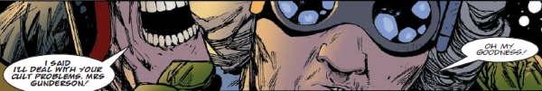

The hard-of-hearing, nearly-blind, unwitting one-time landlady of Judge Death, currently being cared for by Walter the Wobot.
Art by Henry Flint & Chris Blythe
| Story Title | Parts | Pages | w indicates a wraparound coverCovers | Year(s) | Issues | Writer | Artist | Colourist | Letterer |
|---|---|---|---|---|---|---|---|---|---|
From Young DeathThe Boyhood of a Superfiend | 12 | 79 | M1.03: Duncan Fegredo M1.12: Peter Doherty 2 | 1990-1991 | M1.01-1.12 | listed as Brian Skuter (a character in the story) John Wagner | Peter Doherty | <-- | Gordon Robson: 1‑6, 9 Ellie De Ville: 7‑8 Steve Potter: 10‑12 various |
From Judge DeathTea With Mrs Gunderson | 1 | + 1 credit pages8 | 0 | 1992 | M2.15 | John Wagner | Dean Ormston | <-- | Ellie de Ville |
From Judge DreddTerror With Mrs Gunderson | 1 | 10 | Jason Brashill 1 | 1995 | Reprints: M252M2.80 | John Wagner | Jason Brashill | <-- | Tom Frame |
From Judge DreddLethal Weapon | 1 | + 1 credit pages9 | Jason Brashill 1 | 1996 | M3.17 | John Wagner | Jason Brashill | <-- | Tom Frame |
From Judge DreddSpooks | 4 | 24 | 1058: Siku 1059: Julian Gibson 2 | 1997 | 1058-1061 | John Wagner | Calum Alexander Watt | <-- | Tom Frame |
From Judge DreddMrs Gunderson's Little Adventure | 3 | 18 | 0 | 1997 | 1063-1065 | John Wagner | Henry Flint | <-- | Tom Frame |
From Judge DreddDeath Becomes Him | 2 | 12 | 1114: Paolo Parente 1 | 1998 | Reprints: M355 (supplement)1114-1115 | John Wagner | Alex Ronald | Gary Caldwell | Tom Frame |
From Judge DreddA Night With Judge Death | 1 | 6 | Trevor Hairsine 1 | 1999 | 1168 | John Wagner | Andy Clarke Steven Baskervillevarious | Chris Blythe | Tom Frame |
From Judge DreddIncident at Rowdy Yates | 1 | 6 | 0 | 1999 | 1169 | John Wagner | Paul Marshall | Chris Blythe | Tom Frame |
From Judge DreddTurned Out Quite Nice Again | 2 | 12 | 1208: Cliff Robinson 1 | 2000 | 1207-1208 | John Wagner | Henry Flint | Len O'Grady | Tom Frame |
From Judge DreddThe Marriage Game | 1 | 12 | Cliff Robinson & Chris Blythe (C) 1 | 2003 | Reprints: M309 (supplement)M203 | John Wagner | Ian Gibson | <-- | Tom Frame |
From Judge DreddTwenty Years to Midnight | 1 | 12 | 0 | 2010 | M302 | Al Ewing | Henry Flint | Chris Blythe | Annie Parkhouse |
From Judge DreddA Night in Sylvia Plath | 2 | 12 | 0 | 2014 | 1892-1893 | John Wagner | Colin MacNeil | Chris Blythe | Annie Parkhouse |
From Judge DreddLadykiller | 8 | 48 | 1991: Neil Roberts 1994: Ben Willsher 1998: Paul Marshall (a), Chris Blythe (c) 3 | 2016 | 1991-1998 | John Wagner | Carlos Ezquerra | <-- | Annie Parkhouse |
From Judge DreddThe Musical! | 3 | 22 | 2260: Chris Weston1 | 2021 | 2259-2261 | Rob Williams | Chris Weston | Gary Caldwell | Annie Parkhouse |
| year | episodes | pages |
| 1988 | 0 | 0 |
| 1989 | 0 | 0 |
| 1990 | 4 | 24 |
| 1991 | 8 | 55 |
| 1992 | 1 | 8 |
| 1993 | 0 | 0 |
| 1994 | 0 | 0 |
| 1995 | 1 | 10 |
| 1996 | 1 | 9 |
| 1997 | 7 | 42 |
| 1998 | 2 | 12 |
| 1999 | 2 | 12 |
| 2000 | 2 | 12 |
| 2001 | 0 | 0 |
| 2002 | 0 | 0 |
| 2003 | 1 | 12 |
| 2004 | 0 | 0 |
| 2005 | 0 | 0 |
| 2006 | 0 | 0 |
| 2007 | 0 | 0 |
| 2008 | 0 | 0 |
| 2009 | 0 | 0 |
| 2010 | 1 | 12 |
| 2011 | 0 | 0 |
| 2012 | 0 | 0 |
| 2013 | 0 | 0 |
| 2014 | 2 | 12 |
| 2015 | 0 | 0 |
| 2016 | 8 | 48 |
| 2017 | 0 | 0 |
| 2018 | 0 | 0 |
| 2019 | 0 | 0 |
| 2020 | 0 | 0 |
| 2021 | 3 | 22 |
| 2022 | 0 | 0 |